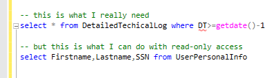

Project Mission and Vision
DevOps usually deals with code deployments – data flow from lower environments to PROD. There is also a flow in the opposite direction. Databases are moved from higher environments to lower environments with cleaning of the sensitive data. Secondly, developers connect to PROD to work on bugs and to check the configurations and performance.
Tools to provide such functionality are immature. RDP or CA PAM gives you too much access. Such tools usually work on “all-or-nothing” manner. One can change a config or even to delete a file just be accidental key stroke.
In tools like CA PAM, even when only read-only SQL access is provided, a user can still select data from sensitive tables:

That is why such access must be approved (and often approvals frequently take a long time).
But in a reality, developers usually need only harmless things, having nothing to deal with sensitive data or with breaking anything – typically they want just to check performance metrics, that want to inspect the config files, to compare the number of records in tables (without reading any data from these tables), to check data fragmentation et cetera.
Bell is a framework to expose access to some (limited and predefined) data/metrics on PROD in an interactive manner. It consists of a framework (open source) and a set of scripts (such sets are called modules). The framework supports integrated security with Active Directory, it can assign permissions based on AD groups, and logs all actions to the audit file or table.
Contrary to products like Octopus, no agent is expected to be installed on every server - instead, the machine where Bell server resides is expected to have enough privileges and network access to be able to get information from the other machines in an agentless manner (by using a remote connection to SQL servers, using WMI, by Powershell cmdlets with -ComputerName parameter)
Framework Scripts are very compact, written in Powershell and usually have 5-10 lines per item. Python and other shells are also supported. Building a solution is like making something from LEGO modules. You can write your own module, you can modify the existing one (hardening the security, for example) and you add features to the existing module without changing the module script files. We provide some useful projects to start with.
The project name (Bell - Action at a Distance) comes from the idea of doing something at a distance, against all odds, without having full access to the system.
The guy in the logo picture is John Steward Bell, the one who had proved the Bell Theorem about Quantum Entanglement.
OpsDev, or "reverse DevOps", is a new area of DevOps.